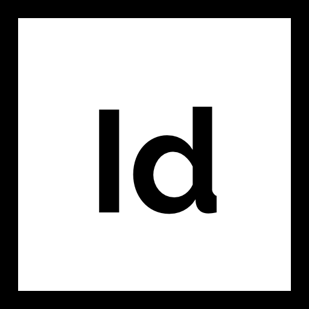
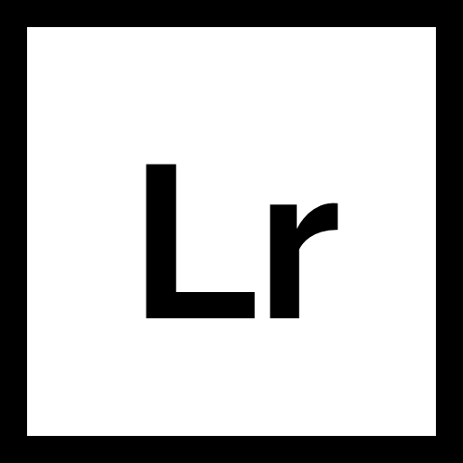
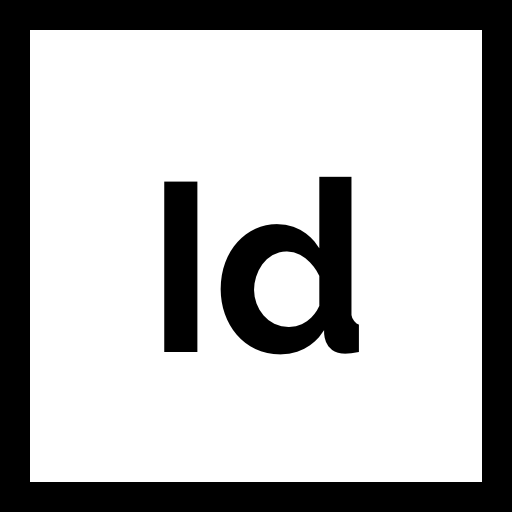
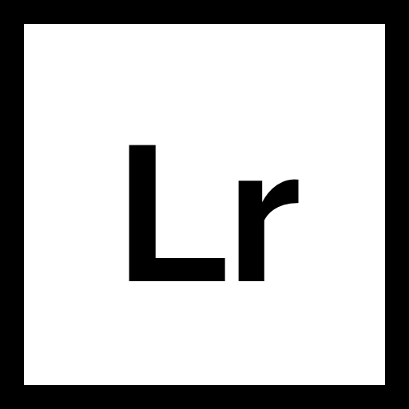

Medium:
Adobe Illustrator
Description:
When it comes to diet and exercise, there always seems to be a new sure-fire method of weight loss out there.
Be it Keto, Vegan, Paleo, low-carb, Atkins, or whatever Oprah is doing; there’s something out there for everyone
to try. For some, it works! But each body is uniquely made and achieving different fitness goals may not always be
achievable with a trendy diet. Knowing the amount of nutrients the body needs to achieve those fitness goals is the
best way to notice a change and finally be rewarded for all that hard work.
This infographic illustrates how to calculate BMI and the amount of Macronutrients that a person would need on a
daily basis to achieve weight loss, maintain current weight, or build muscle.


 


